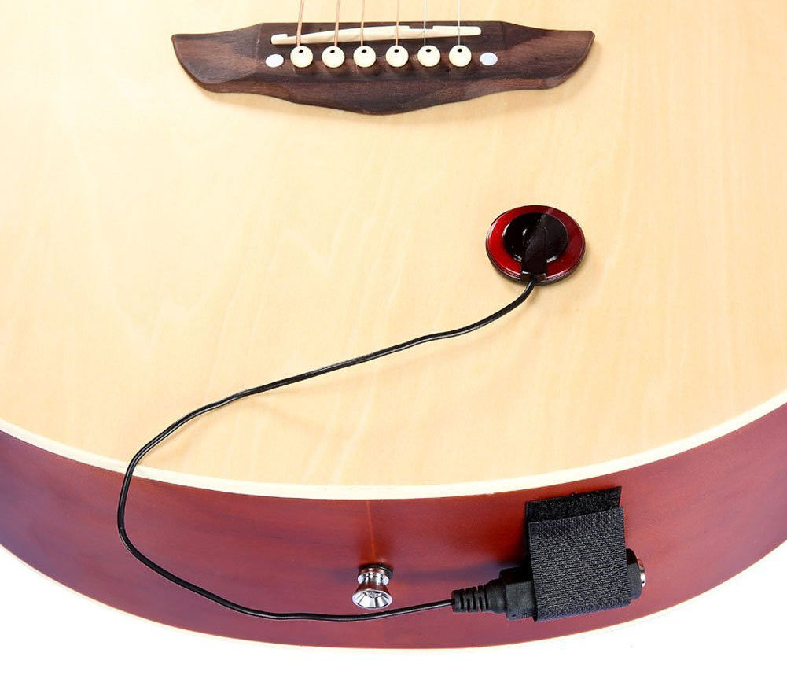

Что такое звукосниматель? В общем случае так называют устройство, которое преобразует энергию "дрожания" струны в электрический сигнал. Существует два основных типа звукоснимателей: электромагнитные и пьезоэлектрические. Отличаются они видом преобразуемой энергии.
Пьезоэлектрические устройства (либо кратко – пьезозвукосниматели) являются более простыми по своему строению датчиками, однако сущность преобразования "дрожания" в электрический сигнал у них сложнее. Они состоят из пьезокристалла – сердца датчика, которое окружено проводниками. Используют такие звукосниматели чаще всего для подзвучки акустических и классических гитар – в данном случае они преобразуют в электросигнал не только колебания струн, но и звуки от корпуса инструмента при использовании перкуссии.
Электромагнитные звукосниматели для гитары – не что иное, как магнит с катушкой индуктивности.
При колебании струн в постоянном магнитном поле, наличие которого обуславливает магнит в звукоснимателе, возникает электродвижущая сила (ЭДС). Звукосниматель передает возникший электросигнал на выходное гнездо гитары – а далее сигнал проходит через тракт звукообработки и попадает в динамики гитарного кабинета или наушники.
ЭДС возникает из-за того, что гитарные струны изготавливают в подавляющем большинстве случаев из ферримагнитных материалов. Звук гитарного датчика зависит в первую очередь от типа магнита и характера обмотки (толщины и типа проволоки).
Чаще всего в характеристиках отдельной модели звукоснимателя вы не найдете указания типа проволоки – так производители сохраняют в тайне особенности технологического процесса. Однако с большой долей уверенности можно говорить о том, что большее количество витков проволоки в катушки даст вам более мощный тон с обилием низких частот.
У ручки пять положений. В зависимости от места, в которое переведён свитч, меняется комбинация используемых звукоснимателей:
Коммутация – это соединение музыкальных инструментов и обрудования для обработки и вывода звука.
По сути, это простые кабели Jack 6.3mm, с помощью которых подключаются гитары.
Различают stereo и mono кабеля, выбор зависит от их применения. Кабеля так же отличают по цвету и длине. Они могут быть как и 1 метр, так и 10 метров. Так же цвет: от обычного чёрного до всяких разноцветных излишеств.
Существует ~17 видов педалей
Гейновые эффекты – работают с уровнем громкости поступающего сигнала. К ним относятся любимые рок-гитаристами Overdrive, Distortion и Fuzz.
Динамические гейновые эффекты, в отличие от просто гейновых, по-разному считывают поступающий сигнал в зависимости от его громкости и соответствующим образом его обрабатывают. В эту группу можно отнести Compressor, Limiter, Volume Pedal, Booster и Noise Gate.
Модулирующие эффекты, или эффекты реального времени, дублируют поступающий сигнал, видоизменяя созданные копии и смешивая их с исходным сигналом. К данным эффектам относятся Chorus, Flanger, Reverberator, Delay, Tremolo, Vibrato, Phase Shifter, Pitch Shifter и Rotating Speakers.
Тоновые эффекты, по сути, являются фильтрами – они позволяют изменить насыщенность определенных частот перед выводом сигнала на усилитель или другой эффект цепочки. Тоновая окраска сигнала при этом меняется, а вот его общий уровень остается прежним. К данной группе эффектов относятся Equalizer и Wah-Wah
Как устроен комбоусилитель
Гитарный комбик представляет собой компактное устройство, сочетающее в себе сразу несколько функций: усиление полученного сигнала, его трансляцию и, как правило, еще и обработку различными эффектами.
Комбик включает в себя предусилитель, или преамп (pre-amp), усилитель и динамик (один либо несколько). Сигнал, снятый звукоснимателями, очень слабый и не может сразу обрабатываться усилителем, а потому нуждается в предварительном усилении, за которое отвечает преамп. Усиленный преампом до необходимого уровня, сигнал передается в усилитель, где снова усиливается и выводится уже на динамик или внешнюю акустическую систему. Если используется внешняя акустика, внутренний динамик либо отключается, либо работает вместе с ней – всё зависит от модели комбика. Добавим, в процессе обработки преампом и усилителем сигнал также может компрессоваться и искажаться, в результате чего на выходе мы получаем различные эффекты, например, овердрайв.
Ламповый – самый первый вид комбоусилителя.Как следует из названия, работают они на ламповых усилителях («на лампах»), что дает теплое, мягкое, объемное и мощное звучание. Используют их обычно на репетиционных точках и концертных площадках. А вот играть в такой комбик дома не имеет особого смысла – всю красоту его звука можно раскрыть лишь на большой громкости, которая явно не понравится вашим соседям.
Стоит также отметить, что ламповые комбики стоят довольно дорого и к тому же нуждаются в периодической замене ламп. Кроме того, при их транспортировке следует быть максимально аккуратным – опять же из-за ламп, которые могут выйти из строя из-за какого-нибудь удара или даже просто тряски.
Транзисторные комбари более неприхотливы, да и весят значительно меньше, чем ламповые, а потому более удобны в транспортировке. Кроме того, они стоят гораздо дешевле и не требуют дополнительных затрат в процессе эксплуатации. «Транзисторный» звук несколько уступает «ламповому» – он более резкий, звенящий, буквально «бьющий в лицо», но при этом раскрывается даже на небольшой громкости, что хорошо для домашних репетиций.
Гибридные комбари имеют ламповый предусилитель и транзисторный усилитель. Это своего рода компромисс между «лампами» и «транзисторами»: от первых гибридные комбо взяли красивый звук, а от вторых – неприхотливость в эксплуатации, маленький вес и легкость в раскачке звука. Стоимость их также находится примерно посередине между транзисторными и ламповыми. Все это делает гибридные комбо отличным вариантом как для домашних занятий, так и репетиций/концертов.
В отличие от предыдущих разновидностей, цифровые, или моделирующие, комбо работают не с аналоговым, а с цифровым сигналом, т. е. преобразуют аналоговый звук в «цифру». Роль предусилителя в них выполняет компьютер. Такие комбо легкие, надежные, позволяют моделировать различные типы усиления, хорошо звучат вне зависимости от громкости, обычно имеют множество гитарных эффектов и к тому же не очень дорого стоят. Такой вариант хорош и для большой сцены, и для маленькой квартиры, существенный минус один: звук цифровой, а не аналоговый, что не всем придется по вкусу.
Мощность
Мощность (в Ваттах) – самый важный параметр любого комбоусилителя.
От него зависит, какую площадь сможет «покрыть» комбик на полной
громкости. Так, для домашних репетиций достаточно будет 10–30 Ватт
(а в некоторых случаях и 3–7 Ватт), причем не факт, что даже эту
мощность вы будете использовать по полной. Для репетиций с группой в
студии или выступлений в небольшом концертном зале нужно устройство
помощнее – минимум 40–50 Ватт, поскольку вам не только нужно
«покрыть» площадь, но и не затеряться на фоне других инструментов,
особенно барабанной установки. А вот большие площадки требуют совсем
другой мощности аппаратуры, а потому там стоит использовать не комбики,
а гитарные стэки. Но это уже отдельная история.
Кстати, на заметку. Ламповый комбик будет звучать значительно мощнее своих собратьев при одной и той же мощности. Это необходимо учитывать при выборе. Также не стоит забывать, что комбо для бас-гитары должен быть по крайней мере в 2 раза мощнее, чем для электро-, в противном случае бас в общем звучании вы просто не заметите – его перекроет рев гитар и грохот «железа» барабанщика.
Количество каналов
Комбоусилители имеют от 1 до 6 каналов звучания, каждому из которых
можно задать свои настройки. Вместо того, чтобы перед каждой песней
вручную менять параметры звука, вы можете просто переключиться с одного
канала на другой и играть уже, например, не на чистом звуке, а на
дисторшене. В большинстве случаев одного-двух каналов вполне достаточно,
но если для вас важно передавать самые разные оттенки звучания, лучше
обратить свое внимание на модели с большим количеством каналов.
Встроенные эффекты и прочие «фишки»
Комбоусилители часто имеют различные гитарные эффекты – это могут
быть как стандартные реверберация или овердрайв, так и целые гитарные
процессоры. Бесспорно, они позволяют экспериментировать со звуком,
однако могут быть весьма посредственного качества. Поэтому для изменения
своего звучания лучше использовать отдельные педали эффектов. Тем более
что зачастую это намного удобнее.
Кроме того, в комбик могут быть встроены тюнер, различные пресеты, аудиоинтерфейс, он может иметь возможность настройки через приложение на смартфоне и пр. Но важно помнить, что все эти «фишки» делают комбоусилитель значительно дороже, а потому перед покупкой стоит задуматься, насколько это все необходимо и будет ли использоваться.
Отдельно стоит отметить, что комбик для электроакустики отличается от комбо для электрогитары или баса. Датчики электроакустики больше подвержены наводкам, а полый корпус многократно отражает звуковые волны. Все это приводит к тому, что при подключении к комбо для электрогитары электроакустика начинает «заводиться», издавая весьма неприятные шумы и свисты. Чтобы избежать этого, комбик для электроакустики имеет систему фильтров, подавляющих обратную связь, а также учитывает все характерные именно для данного вида гитар обертона и нюансы звукоизвлечения, благодаря чему инструмент звучит чисто и красиво.
Комбо для акустики часто оборудованы микрофонным входом, что очень удобно – можно не думать о подключении дополнительной аппаратуры. Кстати, выбирая комбик с микрофонным входом, обратите внимание на наличие фантомного питания – оно потребуется, если у вас конденсаторный микрофон.
Выбор комбоусилителя – вещь сугубо индивидуальная, и прежде всего, вам должно нравиться его звучание. Поэтому выбирать комбо стоит со своей гитарой – только тогда вы будете уверены, что получите именно тот звук, который хотите.
Стоит отметить, что в зависимости от фирмы звучание примерно одинаковых по параметрам комбо будет отличаться. Так, например, у комбоусилителей Fender звук мягкий и чистый, что хорошо подходит для блюза и джаза, а вот любителям музыки потяжелее больше придутся по душе комбо фирмы Marshall – на излюбленном рокерами перегрузе они дают мощное, пробивное звучание. Впрочем, производителей много, а потому главное, на что вам следует полагаться при выборе в плане звучания – ваши уши.
Помимо этого, необходимо учесть, где (дома, на репточке, сцене небольшого клуба или на летнем open air) и в каком составе музыкантов вы планируете играть. Комбик для домашних занятий и комбик для выступлений с группой на более или менее большой сцене будут значительно отличаться – как минимум, по мощности.
И еще один важный момент: качество инструмента и усилителя должно быть сопоставимо. Если у вас простенькая гитара, нет смысла брать навороченный комбо – звук полностью не раскроется, и ваши деньги будут потрачены впустую.
И помните: даже самая дорогая гитара и самый навороченный комбик не сделают из вас Эрика Клэптона или Стива Вая, если вы не будете уделять должного внимания репетициям. Успехов!